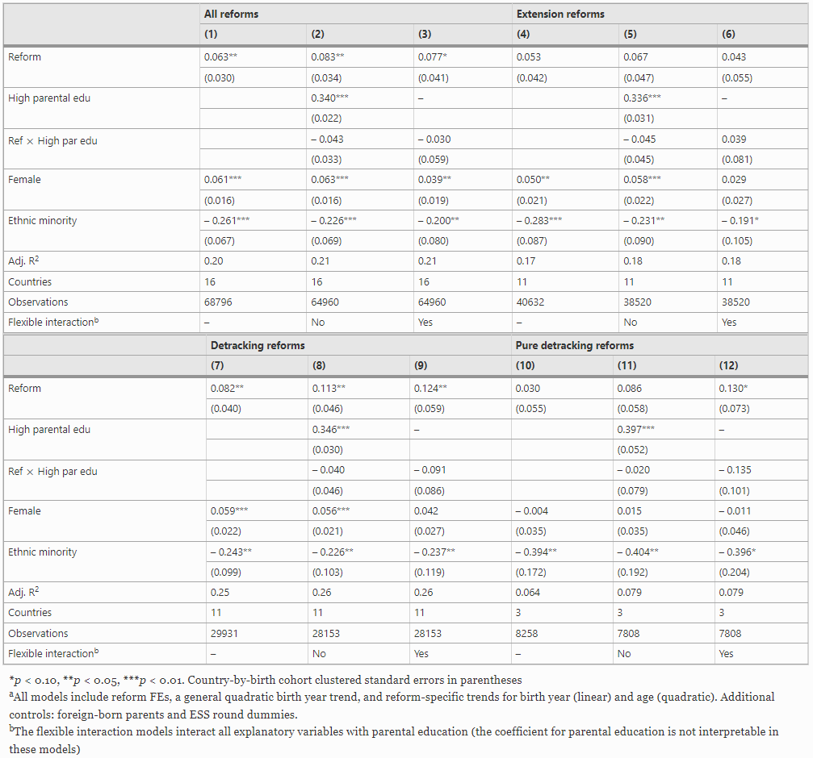
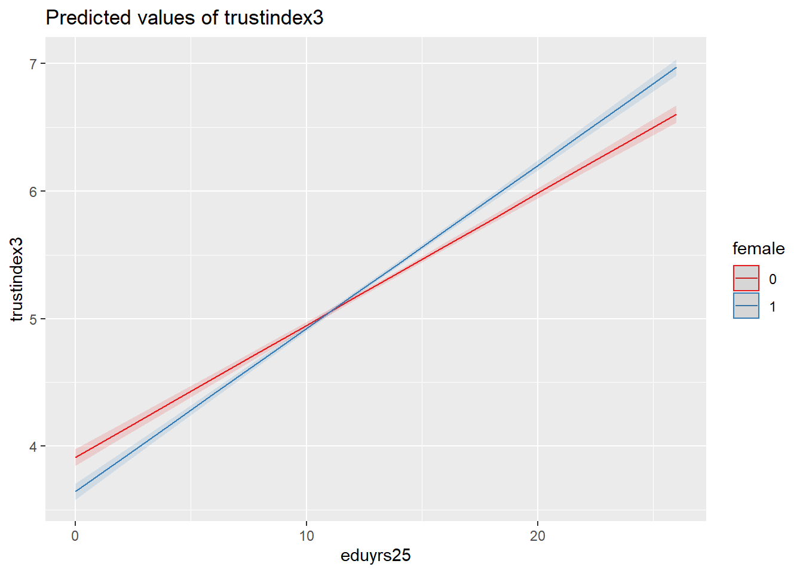
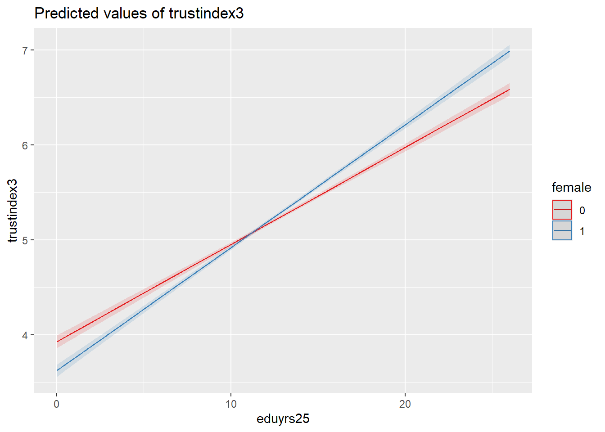

Week 3 Computer Lab Worksheet
Interactions and causal inference
Aims
In this session we continue working with data from Österman (2021) to replicate parts their analysis. In Week 2 we practised building very basic bivariate and multiple linear regression models. In this session, we will expand on those models and attempt to replicate (some of) the models reported in Table 3 of Österman (2021):

Setup
In Week 1 you set up R and RStudio, and an RProject folder (we called it “HSS8005_labs”) with an .R script and a .qmd or .Rmd document in it (we called these “Lab_1”). Ideally, you saved this on a cloud drive so you can access it from any computer (e.g. OneDrive). You will be working in this folder. If it’s missing, complete Task 2 from the Week 1 Lab.
You can create a new .R script and .qmd/.Rmd for this week’s work (e.g. “Lab_3”). It may be useful to document more of your coding process and interpretations, so you want to work in a .qmd/.Rmd document rather than an .R script.
Import data
As a first step, let’s import the osterman dataset that underpins the Österman (2021) article (see the Data page on the course website for information about the datasets available in this course):
Modelling challenges
To continue on from the toy models that we fitted in Week 2, we may remember that we observed a change in the size of the effect and statistical significance of the gender variable (female) when also accounting for years of education and age. The two models compared as so:
mm <- lm(trustindex3 ~ eduyrs25 + agea + female, data = osterman)
mb <- lm(trustindex3 ~ female, data = mm$model)
sjPlot::tab_model(mb, mm)| trustindex3 | trustindex3 | |||||
|---|---|---|---|---|---|---|
| Predictors | Estimates | CI | p | Estimates | CI | p |
| (Intercept) | 5.24 | 5.22 – 5.26 | <0.001 | 2.95 | 2.87 – 3.04 | <0.001 |
| female | 0.01 | -0.02 – 0.04 | 0.582 | 0.04 | 0.01 – 0.07 | 0.004 |
| eduyrs25 | 0.12 | 0.11 – 0.12 | <0.001 | |||
| Age of respondent, calculated |
0.02 | 0.01 – 0.02 | <0.001 | |||
| Observations | 68211 | 68211 | ||||
| R2 / R2 adjusted | 0.000 / -0.000 | 0.063 / 0.063 | ||||
The question arises whether the gender variable interacts with the other predictors, particularly with education as that is the main focus of the research. In other words, we may have reasons to assume that the linear effect of education may be different for males and females. We can include interactions in several ways:
- with the
:operator we
Call:
lm(formula = trustindex3 ~ eduyrs25 + agea + female + eduyrs25:female,
data = osterman)
Residuals:
Min 1Q Median 3Q Max
-6.8899 -1.1775 0.1327 1.3158 6.2142
Coefficients:
Estimate Std. Error t value Pr(>|t|)
(Intercept) 3.1116898 0.0480764 64.724 < 2e-16 ***
eduyrs25 0.1035628 0.0024837 41.698 < 2e-16 ***
agea 0.0157145 0.0005941 26.452 < 2e-16 ***
female -0.2687812 0.0452060 -5.946 2.77e-09 ***
eduyrs25:female 0.0243750 0.0033767 7.219 5.31e-13 ***
---
Signif. codes: 0 '***' 0.001 '**' 0.01 '*' 0.05 '.' 0.1 ' ' 1
Residual standard error: 1.843 on 68206 degrees of freedom
(585 observations deleted due to missingness)
Multiple R-squared: 0.06408, Adjusted R-squared: 0.06402
F-statistic: 1167 on 4 and 68206 DF, p-value: < 2.2e-16
Call:
lm(formula = trustindex3 ~ female * (eduyrs25 + agea), data = osterman)
Residuals:
Min 1Q Median 3Q Max
-6.9169 -1.1760 0.1311 1.3156 6.2161
Coefficients:
Estimate Std. Error t value Pr(>|t|)
(Intercept) 3.2450290 0.0602352 53.873 < 2e-16 ***
female -0.5293431 0.0841053 -6.294 3.12e-10 ***
eduyrs25 0.1022278 0.0025099 40.730 < 2e-16 ***
agea 0.0134344 0.0008591 15.638 < 2e-16 ***
female:eduyrs25 0.0273666 0.0034732 7.879 3.34e-15 ***
female:agea 0.0043688 0.0011892 3.674 0.000239 ***
---
Signif. codes: 0 '***' 0.001 '**' 0.01 '*' 0.05 '.' 0.1 ' ' 1
Residual standard error: 1.843 on 68205 degrees of freedom
(585 observations deleted due to missingness)
Multiple R-squared: 0.06426, Adjusted R-squared: 0.0642
F-statistic: 936.8 on 5 and 68205 DF, p-value: < 2.2e-16